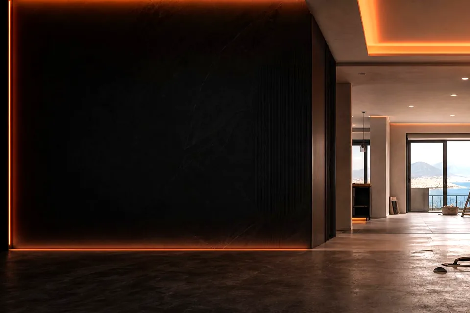
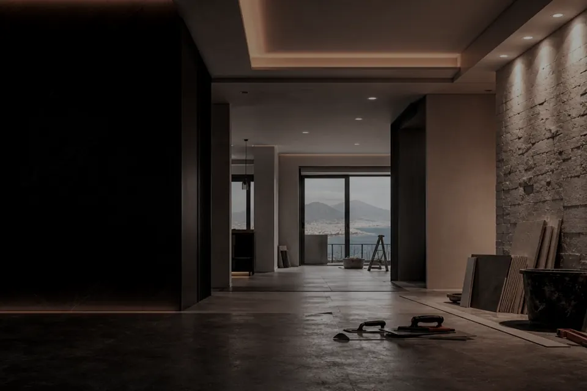
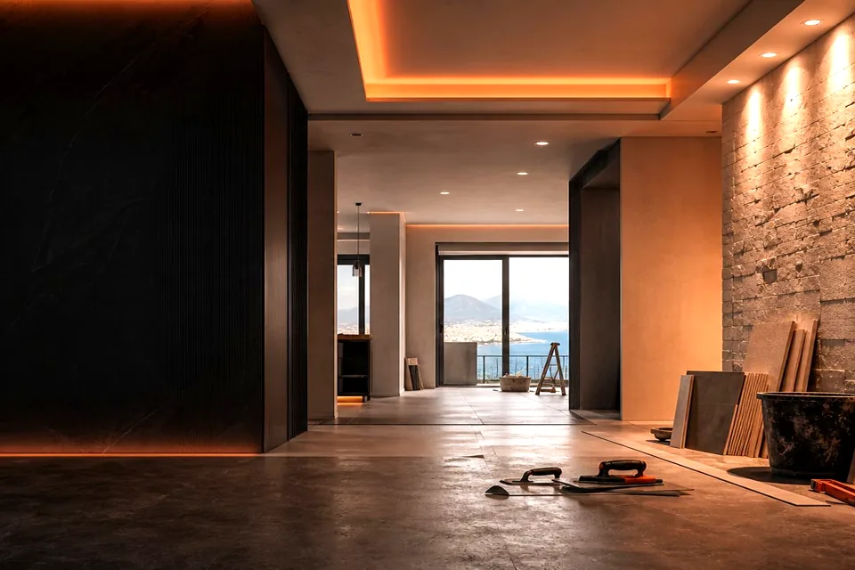
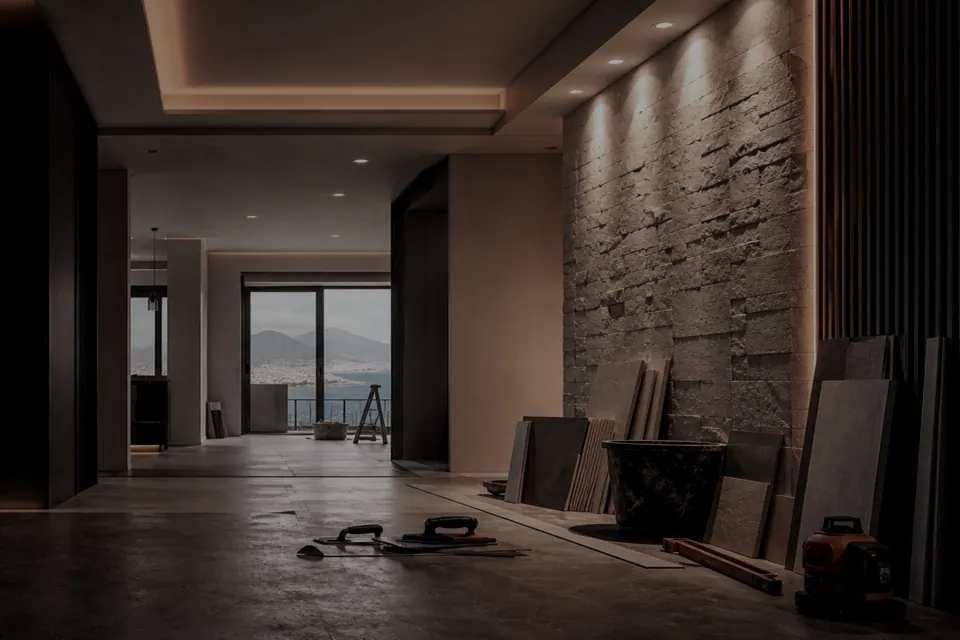
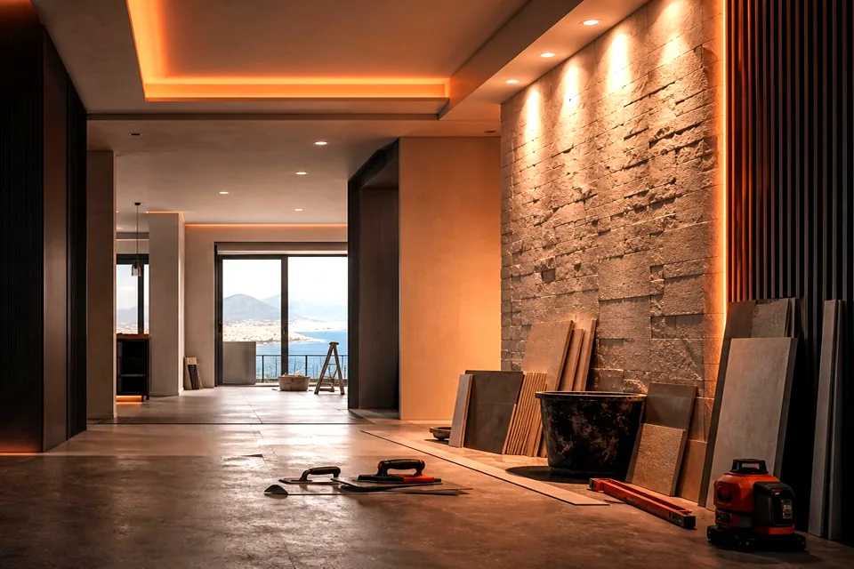

Appartamento
Spazio ripensato dalla base
Organizzazione degli ambienti, superfici, luce e finiture coordinate.
Ristrutturiamo X Professione S.R.L. nasce con l'obiettivo di offrire un servizio edile completo, preciso e orientato alla qualità. Ogni progetto viene seguito con attenzione, dalla prima valutazione fino alla consegna finale, mettendo al centro le esigenze del cliente, la cura dei dettagli e la funzionalità degli spazi.
L'edilizia richiede coordinamento, precisione e presenza sul cantiere. Per questo lavoriamo con un approccio diretto: ascoltiamo, valutiamo, organizziamo le lavorazioni e accompagniamo il cliente fino al risultato finale.
Una sezione visiva pensata per mostrare l'evoluzione dei lavori: stato iniziale, lavorazioni e risultato finale. Le immagini sono ottimizzate e pronte per essere sostituite con foto reali dei cantieri pubblicate sui social.

Organizzazione degli ambienti, superfici, luce e finiture coordinate.


Attenzione a impianti, posa, funzionalità e resa estetica.


Pavimenti, rivestimenti, pittura e dettagli finali per uno spazio completo.
I canali social raccolgono video, contenuti dietro le quinte e aggiornamenti sui lavori. Quando ci sono nuove foto reali dei cantieri, questa galleria può essere aggiornata mantenendo lo stesso layout.
Ogni cantiere viene impostato per ridurre incertezze, tempi morti e improvvisazioni, mantenendo sempre il focus sulla qualità finale.
Valutiamo il lavoro prima di iniziare e definiamo un percorso operativo coerente.
Ogni fase viene controllata per integrare impianti, opere edili e finiture.
La resa finale dipende dai dettagli: bordi, giunti, superfici, allineamenti e pulizia.